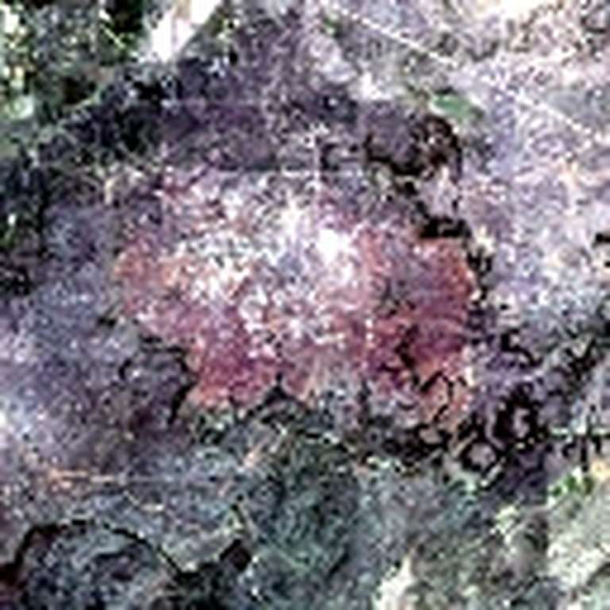
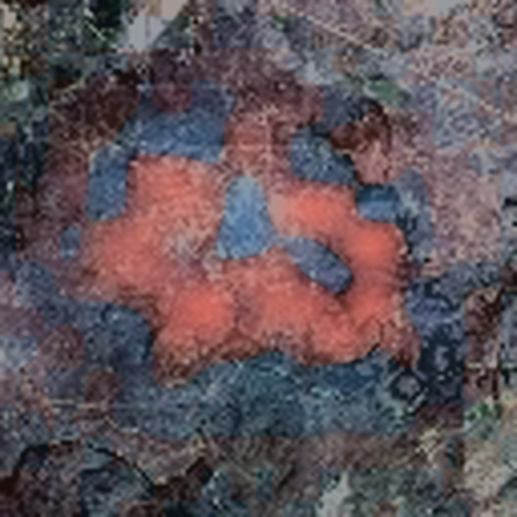
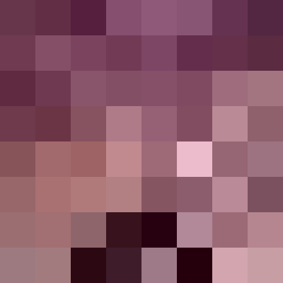

SSI
· Spectral–Spatial Interpretation
HLS Burn Scars
U-Net
Burn-region logit
Observed
Masked
at
Context stays fixed

Location
Five restoration orders
Every position × every band
Where
Which channels

SSI
Spectral–Spatial Interpretation
